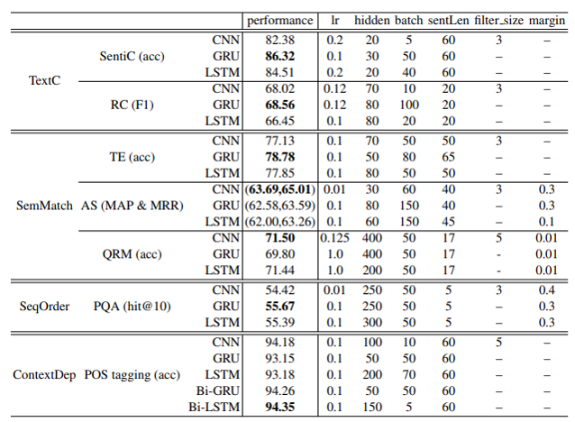

Objectively compares the performance of CNN vs. GRU vs. LSTM in different tasks of NLP
Sentiment classification
Relation classification
Textual entailment
Answer selection
Question relation match
Path query answering
POS tagging
Trains each model from scratch without no extra knowledge (e.g. no pre-trained word embeddings)
Uses the most basic architecture and optimization method

As our intuition, RNNs are more suitable for encoding order information and long range context depedency
Surprisingly, GRUs can outperform CNN in text classification and semantic matching if sentiment/semantic are determined by long range semantic dependency.
One of key issues of deep learning papers = Not being able to replicate the results
This paper is one of the first papers to compare the performance of CNN and RNN in equal and objective experiment setting.